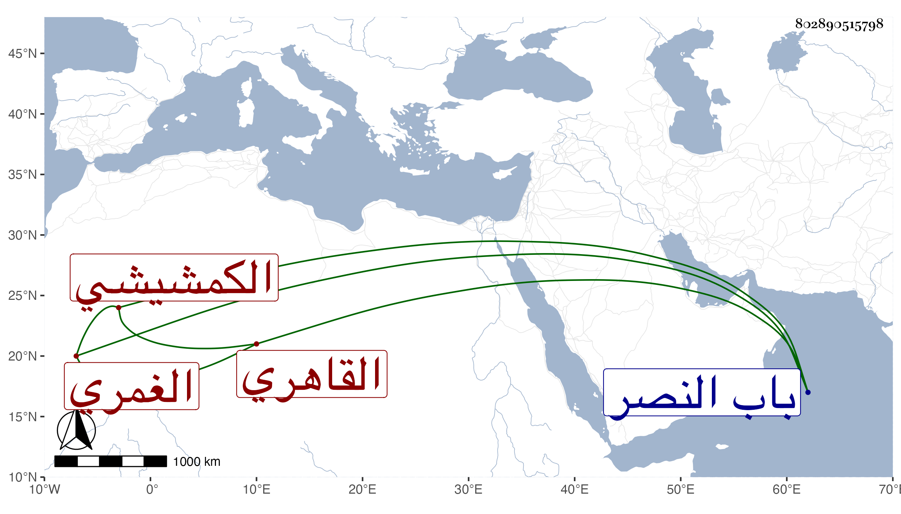

0902Sakhawi.DawLamic.ITO20230111-ara1.EIS1600.802890515798
Biography ID: 802890515798
674
محمد بن عمر بن عبد الله الكمشيشي ثم القاهري الغمري نسبة للشيخ محمد الغمري لكونه من جماعته ، حفظ القرآن وكان كثير التلاوة له وسمع على شيخنا فمن بعده بل سمع مني كثيرا في الإملاء وغيره . وكان متوددا راغبا في الخير ، مات في ذي القعدة سنة تسع وثمانين ودفن خارج باب النصر وأظنه جاز الستين رحمه الله .
